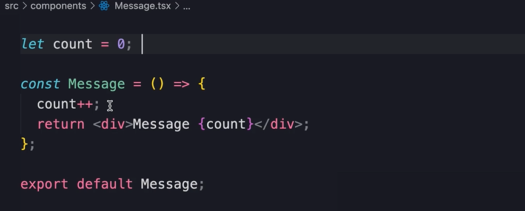
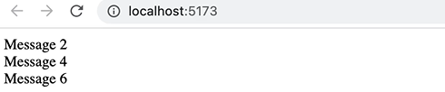
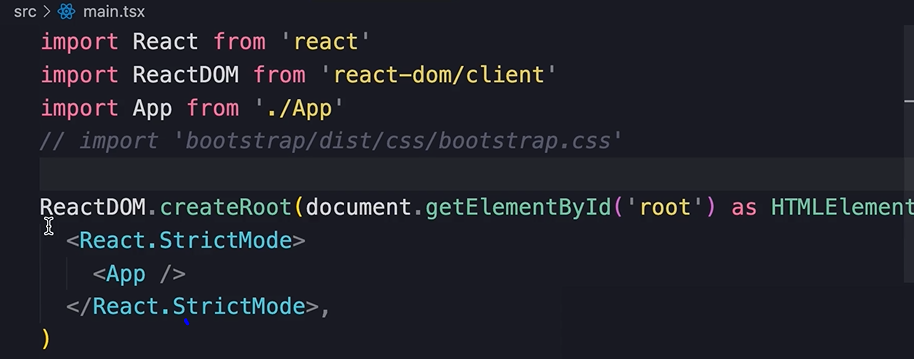
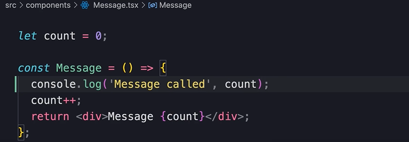
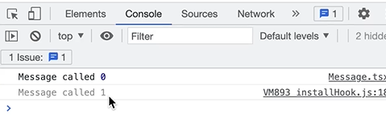

HOME
Understanding the Strict Mode
Impure Example
Previously we had this...

And it gives us this...

But, why did we get 2 4 6 instead of 1 2 3??
Well, this has to do with the Strict Mode in React.
React.StrictMode
Open the file 'main.tsx'

Early in the Course(here)
we learned that we are passing the component tree to ReactDOM for
rendering inside the 'root'.
In the component tree, our App is wrapped in React.StrictMode.
This is a built in component of React without a visual representation.
It's only there to catch potential problems.
What StrictMode does
One of the potential problems is
impure components.
When StrictMode is enabled each component is
rendered twice
That is why we get 2 4 6 and not 1 2 3
React renders each component twice and displays
the result of the second render result.
Finding impure components
We can find impure components like this console.log...

The 'greyed out' result is coming from strict mode...

Only in development mode
React only behaves this way in development mode, and in the final
release our components will only render once.